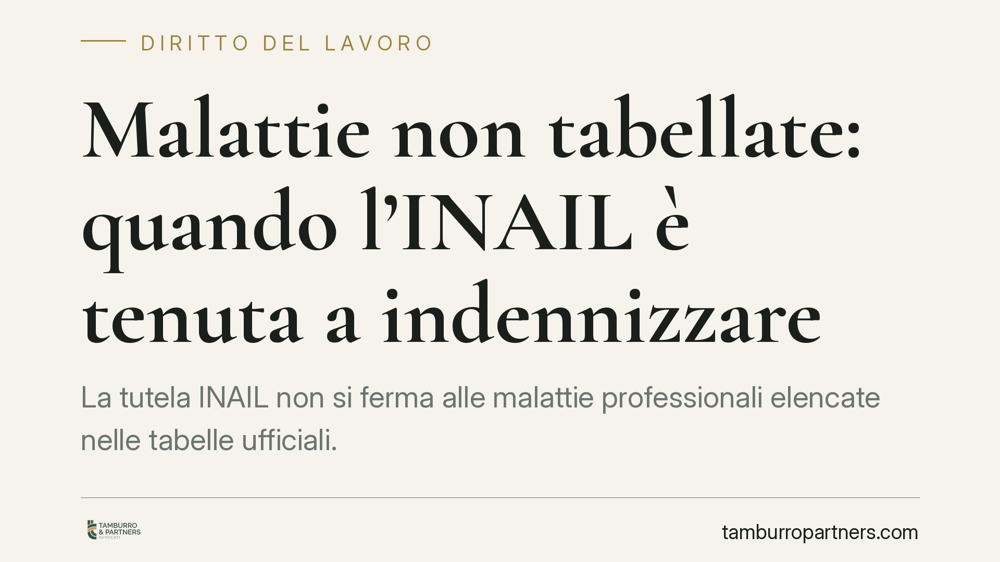
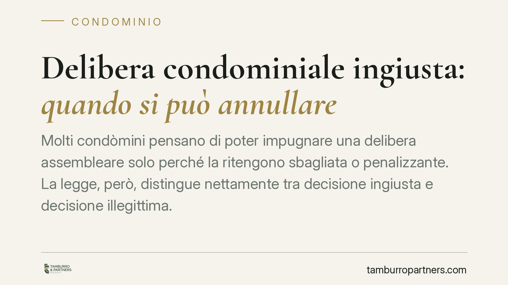
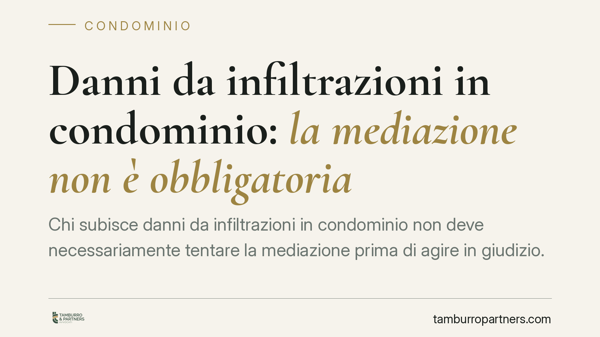
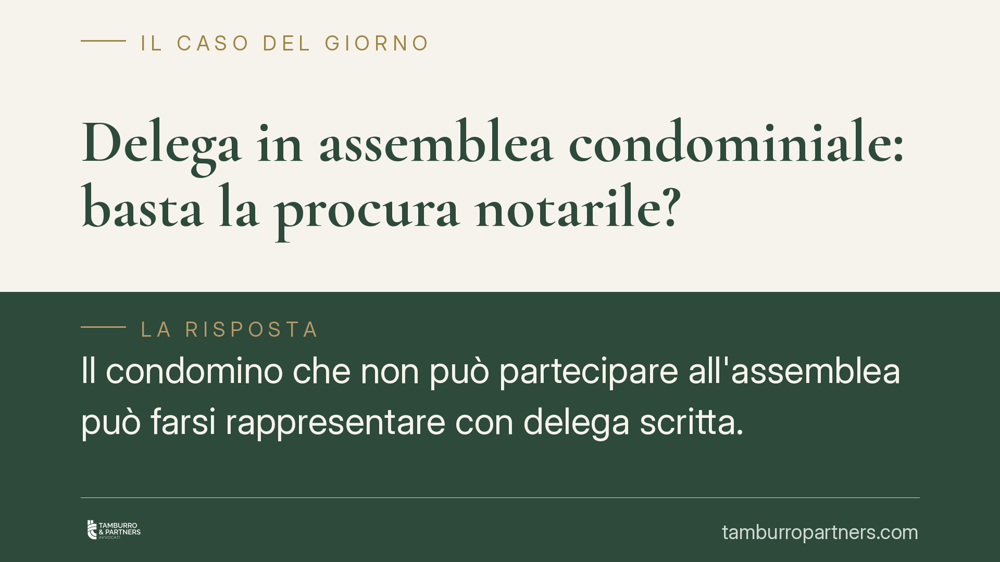
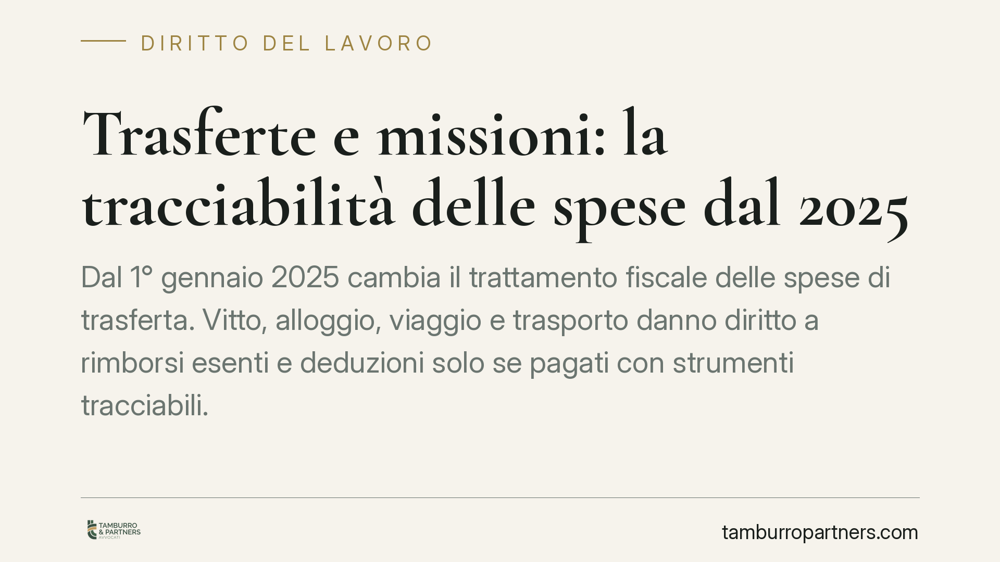
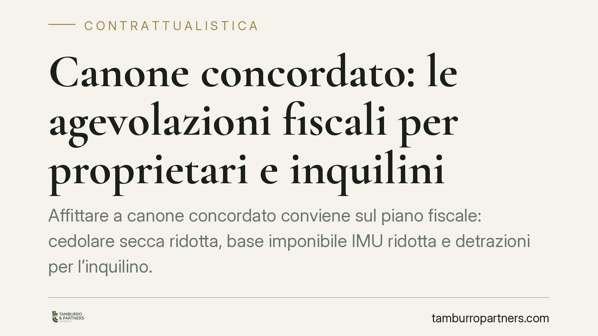
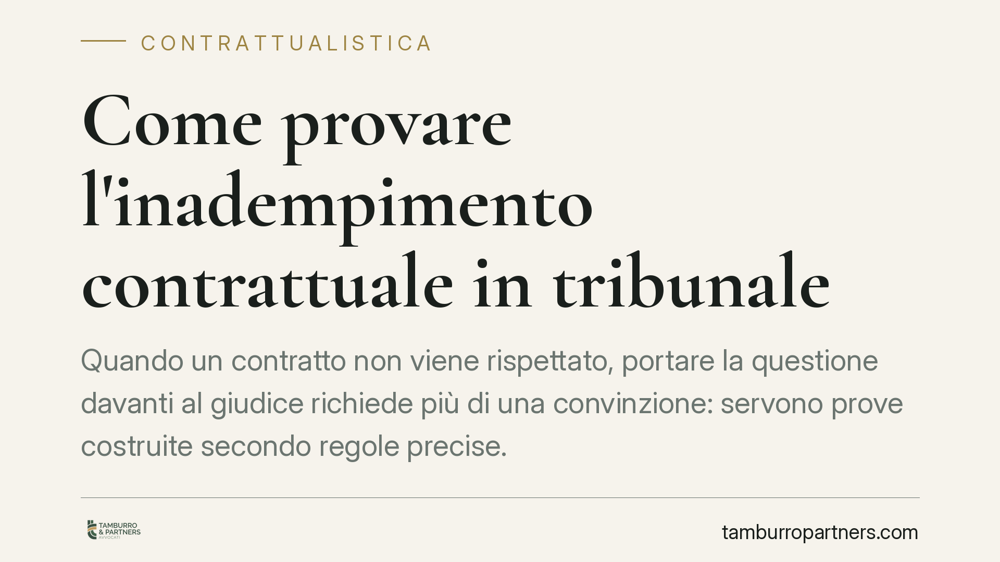
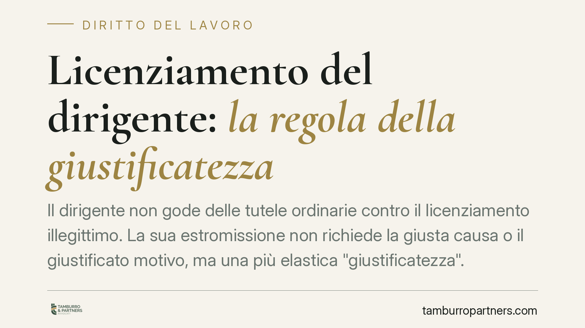

Ogni contributo verifica fonti primarie e indica cosa cambia per il destinatario. Mai marketing, mai pareri travestiti.
Cani che abbaiano, lavatrici notturne, musica ad alto volume: i rumori sono tra le principali fonti di conflitto condominiale. Il confine tra fastidio e illecito passa dal criterio…
Chi abita in un immobile di proprietà pubblica spesso confida di poterlo comprare quando l'ente decide di venderlo. La Corte di Cassazione ha però ridimensionato questa aspettativa…
Un bilancio condominiale con errori non è un problema solo contabile. La contestazione va proposta entro trenta giorni, ma l'approvazione dell'assemblea non chiude ogni discorso: l…

La tutela INAIL non si ferma alle malattie professionali elencate nelle tabelle ufficiali. La Cassazione conferma che anche patologie non tabellate possono essere indennizzate, a c…
Comprare o vendere una casa che presenta un abuso edilizio non rende automaticamente nullo il compromesso. La Cassazione ha chiarito che il contratto preliminare resta valido, a co…

Molti condòmini pensano di poter impugnare una delibera assembleare solo perché la ritengono sbagliata o penalizzante. La legge, però, distingue nettamente tra decisione ingiusta e…

Chi subisce danni da infiltrazioni in condominio non deve necessariamente tentare la mediazione prima di agire in giudizio. Due recenti pronunce, del Tribunale di Napoli Nord e del…
Un messaggio WhatsApp inviato al dipendente dopo la fine del turno sembra un gesto innocuo. In alcuni casi, però, può integrare una prestazione lavorativa retribuibile ed esporre l…
L'avviso di convocazione è l'atto con cui l'amministratore chiama i condomini a decidere. Se manca dei requisiti previsti dall'art. 66 delle disposizioni di attuazione del Codice c…
Chi lavora in hotel, bar e ristoranti è esposto a rischi spesso sottovalutati: turni prolungati, movimentazione di carichi, esposizione a calore, sostanze e rumore. Queste condizio…

Il condomino che non può partecipare all'assemblea può farsi rappresentare con delega scritta. Ma se dispone di una procura notarile, questa è sufficiente o ne serve una specifica?…
Molti condòmini vorrebbero affidare a una persona di fiducia il compito di rappresentarli in ogni assemblea, senza rilasciare ogni volta una nuova delega. Ma una delega "permanente…
Le ferie non fruite entro diciotto mesi dalla fine dell'anno di maturazione espongono il datore di lavoro a sanzioni amministrative e, secondo la Cassazione, a possibili obblighi r…
Una pronuncia del Tribunale di Genova torna sul tema delle bollette contestate. Il punto non è un fantomatico onere probatorio addossato al consumatore: la prova del credito resta …
Un cantiere sospeso o sottoposto a sequestro non è un cantiere privo di rischi. La giurisprudenza penale ha ribadito che il coordinatore per l'esecuzione mantiene i propri obblighi…
Nel procedimento di sfratto per morosità l'inquilino non è per forza sulla difensiva: può reagire chiedendo i danni al locatore. Ma solo rispettando i tempi processuali. Depositare…

Dal 1° gennaio 2025 cambia il trattamento fiscale delle spese di trasferta. Vitto, alloggio, viaggio e trasporto danno diritto a rimborsi esenti e deduzioni solo se pagati con stru…
Gli anni di servizio prestati a tempo determinato nella Pubblica Amministrazione possono valere ai fini dell'anzianità retributiva dopo la stabilizzazione. Lo ha ribadito la Corte …
Quanto prenderò di pensione e quando potrò smettere di lavorare sono le due domande più frequenti tra i lavoratori. Le risposte dipendono dal metodo di calcolo, dall'anno di prima …
Chi ha definito un procedimento penale con il patteggiamento si chiede spesso se debba comunicarlo al datore di lavoro. La regola generale è netta: nessun obbligo di dichiarazione …

Affittare a canone concordato conviene sul piano fiscale: cedolare secca ridotta, base imponibile IMU ridotta e detrazioni per l'inquilino. Le agevolazioni, però, scattano solo se …

Quando un contratto non viene rispettato, portare la questione davanti al giudice richiede più di una convinzione: servono prove costruite secondo regole precise. Una recente pronu…
Chi agisce in giudizio contro il datore di lavoro e viene poi licenziato può trovarsi di fronte a un recesso ritorsivo. Se la reazione dell'azienda è la causa reale del licenziamen…
Si discute di un intervento normativo che escluderebbe buoni pasto e alcune indennità dalla retribuzione delle ferie dei dipendenti pubblici, per contenere un impatto stimato dalla…
Un amministratore il cui incarico è scaduto non può essere revocato dal giudice: il mandato è già cessato e non c'è nulla da revocare. La revoca giudiziale resta riservata alle gra…

Il dirigente non gode delle tutele ordinarie contro il licenziamento illegittimo. La sua estromissione non richiede la giusta causa o il giustificato motivo, ma una più elastica "g…
Si torna a discutere dei congedi per la malattia dei figli e dei relativi limiti anagrafici. Il tema tocca migliaia di lavoratori genitori e solleva un profilo delicato: la possibi…
L'assegno di ricerca costituisce spesso l'unica fonte di reddito del ricercatore. Quando arriva un pignoramento, la domanda è immediata: quanto può essere aggredito? La risposta di…
Quanto può chiedere un avvocato? Non esiste un tetto rigido fissato per legge, ma il compenso è vincolato da regole precise: obbligo di preventivo scritto dal 2017, parametri minis…
Una recente pronuncia del Tribunale di Torino torna sul tema dell'abuso di dipendenza economica nei contratti a lunga durata. La questione riguarda i rapporti tra imprese in cui un…